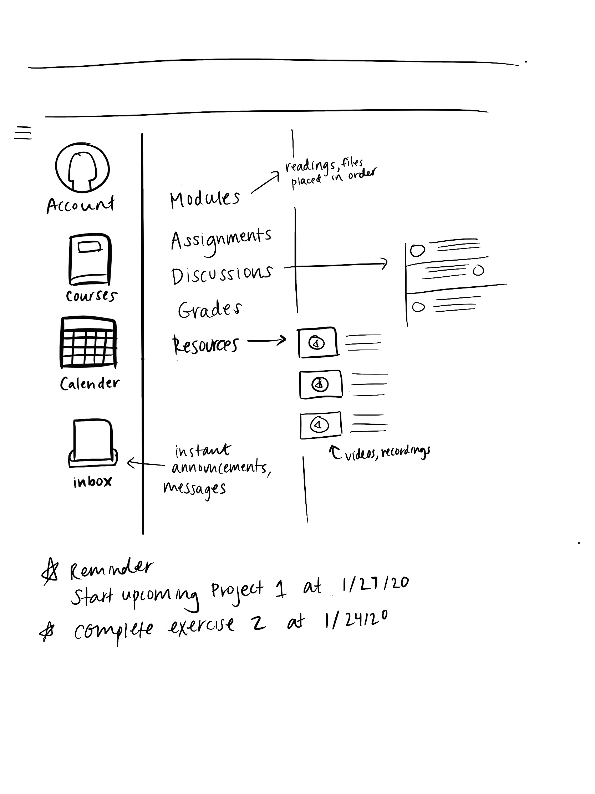

Research question
How can student digital course companion sites be flexible and specialized to improve user experience for BFA students in programs including the arts, film, and music?
I am interested to see how students from creative fields navigate their courses and gather information on user experiences from students in different fields of study. I am interested in looking into the way these student course sites could be improved to include content that is exciting and resourceful for the student, as well as simple navigation.
User survey
As a design student, does viewing your assignments on Canvas inspire you to create? If not, how can Canvas showcase assignments and exercises to guide you in the creation process?
Is it easy to navigate course information, assignments, and files?
What additional tools can Canvas offer teachers to better communicate the purpose and desired outcome of assignments?
Link to user survey linkIdeation
